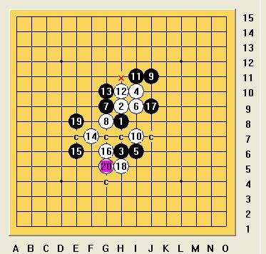
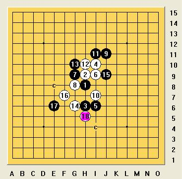

瑞星11盖一问
首页
茗弈阁
#1 瑞星11盖一问 作者：淡红的秋樱 发表时间：2009-6-25 22:04:14
=======上图对应的爱五子棋谱代码如下，以便你拆解：========
h8h9h6i10i6i9g9g8j11i7i11h10g10f7e6g6j9
======================================================或者
=======上图对应的爱五子棋谱代码如下，以便你拆解：========
h8h9h6i10i6i9g9g8j11i7i11h10g10g6j9
======================================================白棋该怎么走比较好
#2 Re:瑞星11盖一问 作者：陨落之城 发表时间：2009-6-25 22:18:43
弱弱的问一下，为什么要走那个14？
#3 Re:瑞星11盖一问 作者：慎独 发表时间：2009-6-25 22:39:20

第二图白冲4活三，回到第一棋型
 ［ 茗弈小刀 于 2009-6-26 10:05:45 时花20金币送鲜花一朵］
#4 Re:瑞星11盖一问 作者：淡红的秋樱 发表时间：2009-6-26 19:31:53
=======上图对应的爱五子棋谱代码如下，以便你拆解：========
h8h9h6i10i6i9g9g8j11i7i11h10g10f7e6g6g11h11j9
======================================================这个呢？